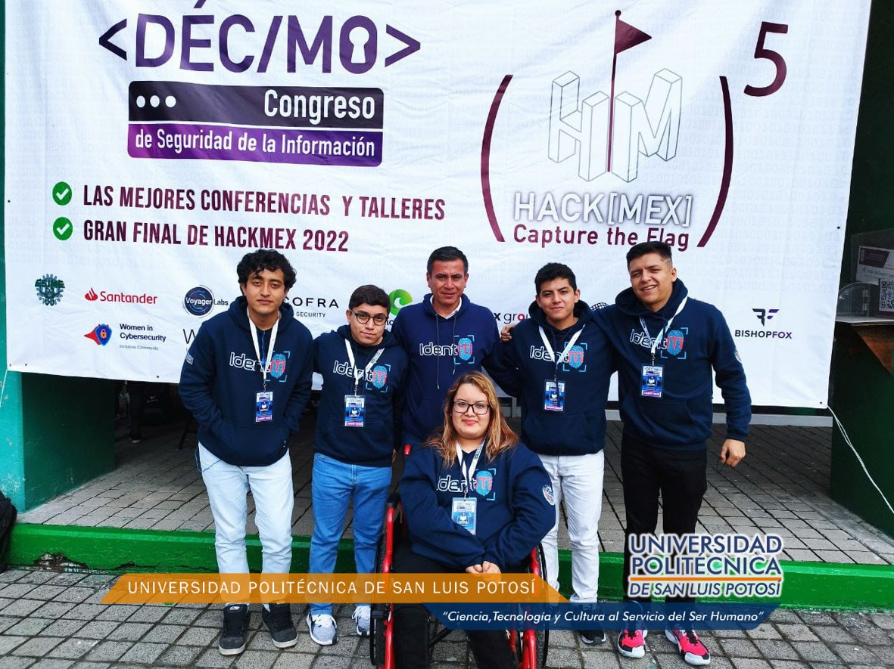

Academia de Tecnologías
Academia de Tecnologías
de la Información y Telemática
Academia de Tecnologías
Estudió Ingeniería en Electrónica (Facultad de Ciencias de la UASLP) y la Maestría en Ciencias de la Computación (CICESE en Baja California).
Ingreso a la universidad en Enero del 2006 como profesor asignatura y en Agosto del 2012 como profesor de tiempo completo por proyecto.
Sus áreas de especialidad son: la Programación, el manejo de Sistemas Operativos, los Métodos Numéricos, los Sistemas Embebidos, el Internet de las Cosas, los Gráficos por Computadora utilizando UNITY® y el Desarrollo de Video Juegos. A desarrollado proyectos en colaboración con: COPOCyT, APEX Racing Simulators y la UASLP.
Certificaciones obtenidas: Microsoft Office Word 2003, Microsoft Office Excel 2003, Microsoft Office Power Point 2003, Microsoft Office Access 2003, Microsoft Office Word Expert , Microsoft Office Excel Expert, Microsoft Office Specialist Master Instructor, Microsoft Office Word 2007, Microsoft Office Excel 2007, Microsoft Office Power Point 2007, Microsoft Office Access 2007, Microsoft Office Outlook 2007, Adobe Flash CS3 y CS4, Adobe Dreamweaver CS3 y CS4, Certificación en Lenguaje de Programación Java, Certificación del Sistema Operativo Solaris 10 y Certificación en Desarrollo de Videojuegos con Unity.
Actualmente administra la Academia ORACLE de la Universidad Politécnica de San Luis Potosí, para facilitar a nuestros estudiantes los programas de certificación de Java, Solaris y MySQL como una herramienta que permita fortalecer su conocimiento, mejorar sus habilidades y facilitar su inserción en el mercado laboral. Administra también el Programa Universitario de Freescale o NXP, proporcionando una amplia variedad de oportunidades a estudiantes y maestros, ofreciéndoles equipos de desarrollo de hardware/software para su uso en clases, colaborando en proyectos de investigación y brindando oportunidades de empleo a estudiantes. Como parte del programa, se está trabajando con los alumnos para participar en la competencia nacional Freescale CUP de carros autónomos.
Estudios: Ingeniería en Informática (UASLP), Maestría en Tecnologías de información con especialidad en redes de computadoras (UNID).
Fecha de Ingreso a la universidad: 2008 como profesor asignatura. 2011 como profesor de proyecto.
Área de especialidad: Programación, Tecnología Educativa, Redes y Seguridad.
Trabajos de colaboración con otras instituciones educativas o empresas:
Es Ingeniero en Sistemas Computacionales por el Instituto Tecnológico de San Luis Potosí. Es Maestro en Ciencias de la computación por el Centro de Investigación Científica y de Educación Superior de Ensenada – CICESE.
Del 2002 a la fecha se desempeña como Profesor de Tiempo Completo en la Universidad Politécnica de San Luis Potosí, dentro de la Academia de Tecnologías de la Información y Telemática. Pertenece al cuerpo académico “Tecnologías de la Información y comunicación para el desarrollo y la Competitividad”. Sus áreas de investigación giran en torno a la seguridad informática y el cómputo ubicuo.

Ha impartido diversas pláticas relacionadas con aspectos de concientización sobre la seguridad de la información a diversas instituciones públicas, así como en instituciones educativas públicas y privadas. Es Coordinador de la Unidad de Delitos Informáticos dentro de la Universidad Politécnica de San Luis Potosí. Actualmente trabaja en conjunto con la secretaría de seguridad pública en un par de proyectos relacionados con las áreas del computo forense y computo móvil.
iti@upslp.edu.mx
Teléfono: (444) 870 – 21 – 00 Ext. 223
extension.universitaria@upslp.edu.mx
(444) 870 – 21– 00 Ext. 203
Urbano Villalón num.500, Col. La Ladrillera, San Luis Potosí, S.L.P. México, C.P. 78363
Conmutador: (444) 870 - 21 - 00
Atención Politécnica: politecnica@upslp.edu.mx
© 2024 Todos los derechos reservados | ATIT | UPSLP
 Página de Facebook
Página de Facebook Página de Instagram
Página de Instagram Página de la Universidad
Página de la Universidad